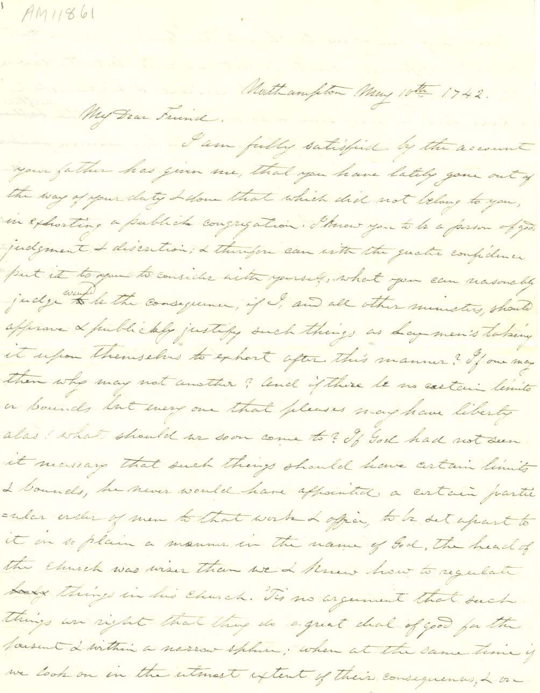

Jonathan Edwards and the Great Awakening
Letter to the Reverend Joseph Bellamy, Pastor of the Church in Bethlehem, Connecticut, from Jonathan Edwards, Northampton, January 21, 1742
From 1726 to 1750 Edwards served as the pastor of the Third Church in Northampton, the largest and most influential church outside of Boston. This particular letter was addressed to Edwards's fellow minister and former pupil, the Reverend Joseph Bellamy, of Bethlehem, Connecticut. Written during the Great Awakening, at a time when Edwards was preaching some of his most famous revival sermons, such as A Faithful Narrative of the Surprising Work of God (1736) and Sinners in the Hands of an Angry God (1741), the letter faithfully reflects Edwards's preoccupations and labors at this very active moment in his career. Edwards wrote to other fellow ministers, such as Moses Lyman of Goshen, Connecticut, to counsel against preaching false doctrines. (Manuscripts Division, Jonathan Edwards Collection)
(click on document to view larger image)
Two Dissertations: I. Concerning the End for which God created the World. II. The Nature of True Virtue, by the late Reverend, Learned and Pious, Jonathan Edwards, President of the College of New Jersey, 1765
After twenty-three years, Edwards's ministry at Northampton came to a close as a result of the theological controversy between him and his people concerning the terms of Christian communion. On June 2, 1750, a Council of Churches voted that the relation between pastor and people be dissolved. Edwards remained in Northampton for over a year, occasionally preaching there by request, considering plans for the future, and making several exploratory visits to Stockbridge where he had been invited to take charge of the Housatonic Indian mission and the church. Many feared that Edwards would remain and establish a "distinct and separate congregation," as some of his friends were urging him to do. With the advice of an ecclesiastical council, Edwards decided to leave Northampton and accept the call to Stockbridge. He was formally installed on August 8, 1751. During his time at Stockbridge, Edwards wrote these treatises that brought him fame as a great American philosopher and theologian. (University Archives)
<>Letter to the Reverend Aaron Burr from Jonathan Edwards, Sheffield, May 6, 1752
Edwards wrote this letter the year after he moved to Stockbridge. Burr was serving as president of the College of New Jersey at this time. The letter emphasizes the close bonds that linked Edwards to like-minded ministers in other parts of America and in England and Scotland. The "great design" of the College of New Jersey is the principal subject of Edwards's letter to Burr. The promoters of the college were looking towards their brethren abroad for help, and various plans for a fundraising tour were being discussed. Burr was among those being mentioned as a possible leader of such a mission. (Manuscript Division, Jonathan Edwards Collection)
(click on document to view larger image)
Jonathan Edwards Exhibit, Early Life, College of New Jersey (Princeton University)
Follow these links for more information about the Seeley G. Mudd Manuscript Library and Princeton University.